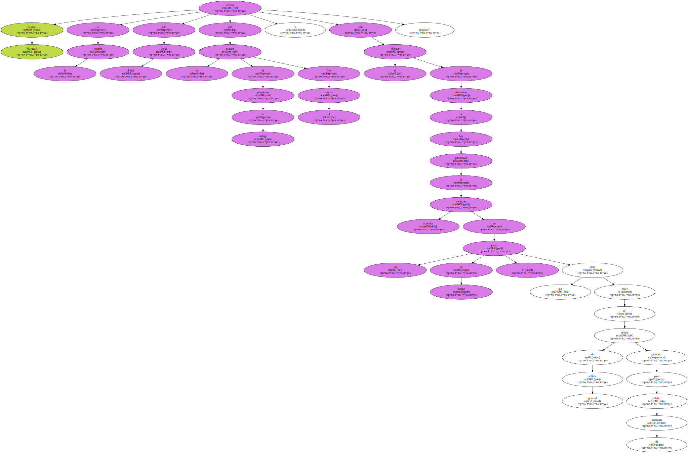
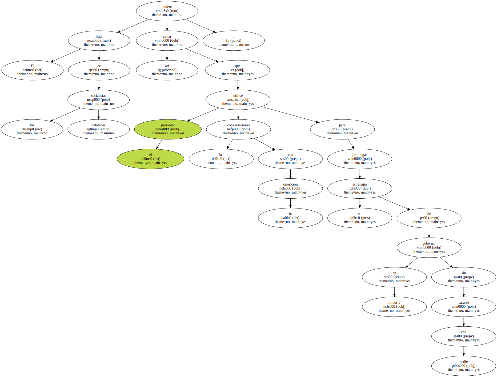
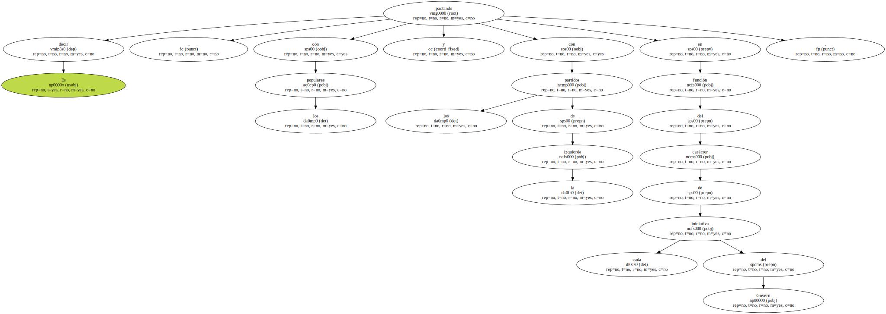
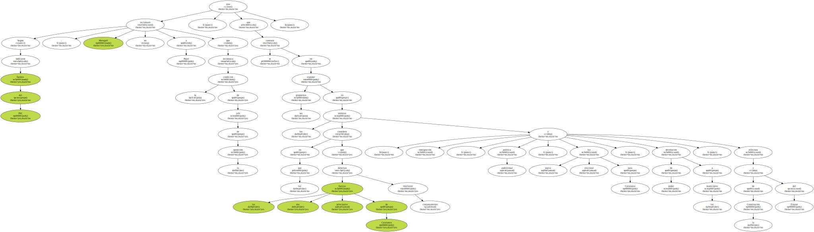
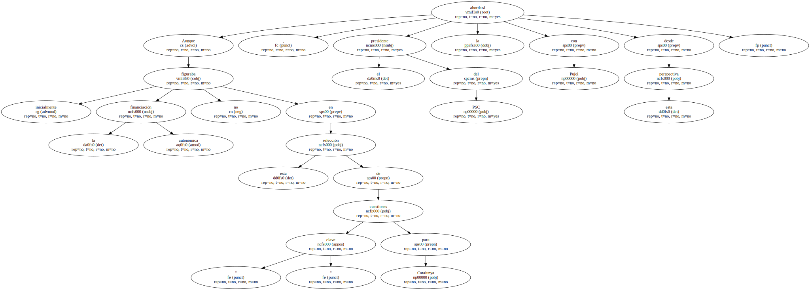
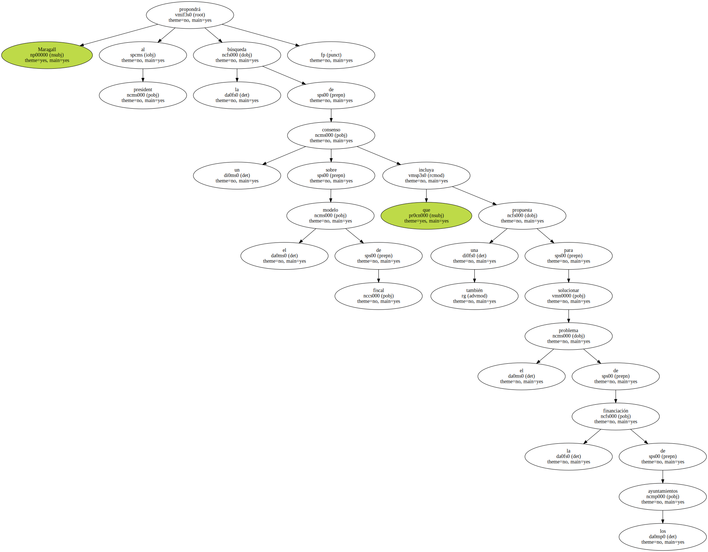
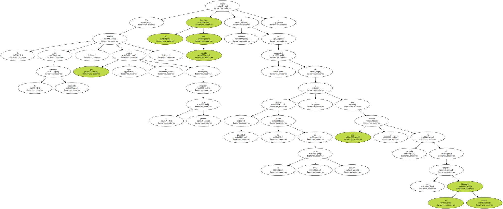

Pasqual Maragall acudirá a la reunión con Jordi Pujol con un paquete de propuestas de diálogo bajo el brazo y con el objetivo de determinar si hay posibilidad de alcanzar acuerdos en un plazo de tiempo , que sitúa antes del debate de política general previsto para mediados de octubre.
El líder de los socialistas catalanes quiere evitar así que el president utilice las conversaciones con la oposición para prolongar su estrategia de gobernar en minoría sin casarse con nadie.
Es decir , pactando con los populares y con los partidos de la izquierda en función del carácter de cada iniciativa del Govern.
Según indicaron fuentes del PSC , Maragall no reclamará a Pujol que reconozca su condición de jefe de la oposición , sino que se centrará en exponer sus propuestas en los ámbitos en los que considera que las dos principales fuerzas de Catalunya deberían intervenir conjuntamente : inmigración , política audiovisual , nueva ley electoral para Catalunya , devolución de poder a los municipios , y relectura de la Constitución y del Estatut.
Aunque inicialmente la financiación autonómica no figuraba en esta selección de cuestiones " clave " para Catalunya , el presidente del PSC la abordará con Pujol desde esta perspectiva.
Maragall propondrá al president la búsqueda de un consenso sobre el modelo de fiscal que incluya también una propuesta para solucionar el problema de la financiación de los ayuntamientos.
En la reunión de la ejecutiva socialista , que ayer se centró en preparar el curso político , la dirección del partido estuvo de acuerdo en la necesidad de plantear como prioridad la oferta de un pacto local catalán , y que éste se articule en paralelo al que impulsa el Gobierno central.
El modelo económico que defienden los socialistas pasa por dotar a los ayuntamientos de más competencias y de la correspondiente financiación para hacer frente , por ejemplo , a problemas como los generados por la inmigración o para poder desarrollar su propia política de empleo.